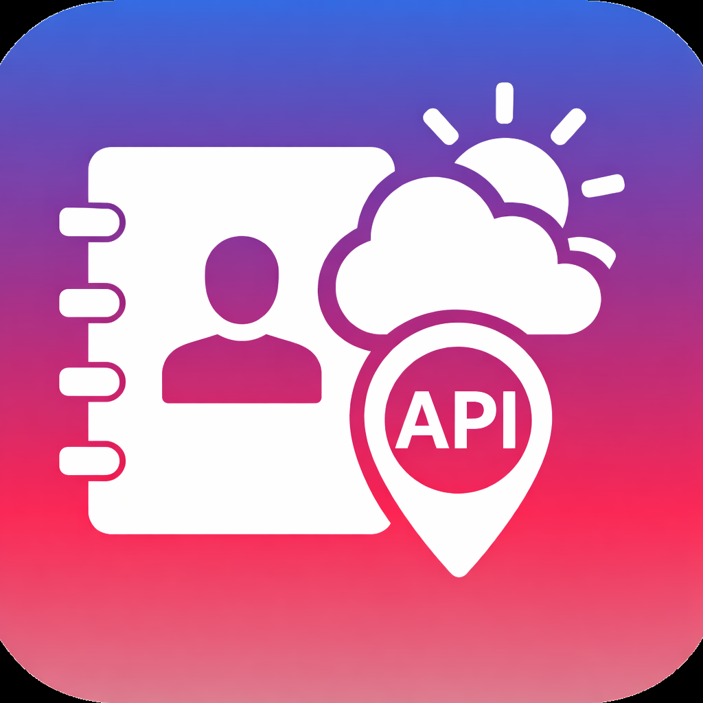

Contact ManagerAplikacja webowa do zarządzania kontaktami, zbudowana w Django. Umożliwia pełny CRUD kontaktów, wystawia REST API, oferuje dashboard ze statystykami i wykresami, obsługuje import/eksport CSV oraz prezentuje pogodę dla miasta kontaktu w czasie rzeczywistym. Projekt zawiera 32 testy jednostkowe i integracyjne pokrywające API, walidatory i import CSV.